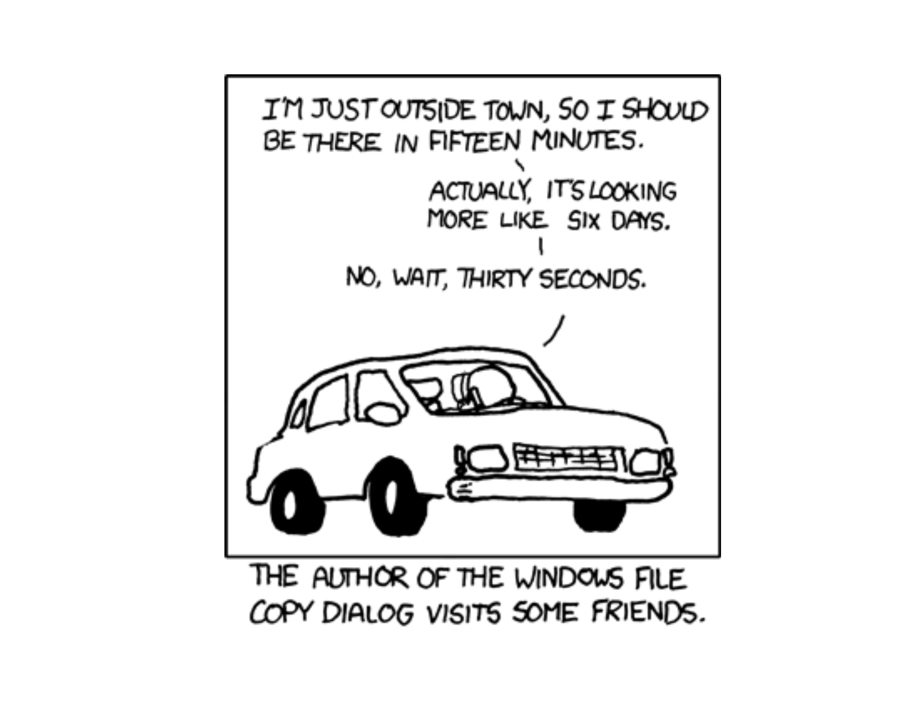
Lesson 13: Exponential Distribution
Calendar
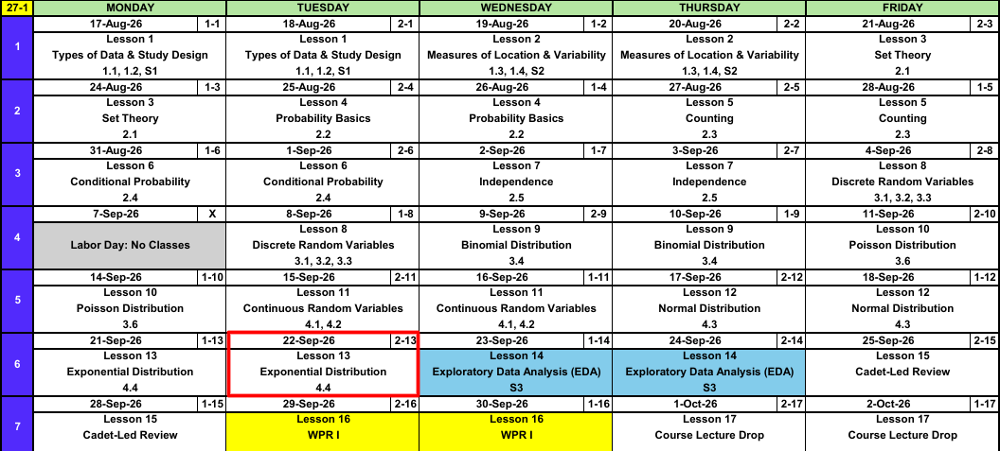
WPR I Review
Last semester’s review, for more practice:
Substitute Instructor
Any day now I will step away to cover MA376 for a couple of weeks. While I am gone, a different instructor teaches your section.
| Hour | Instructor |
|---|---|
| B | Mr Crow |
| C | Dr. Thomas |
| D | MAJ Lovas |
Open Vantage
First thing today, go to the MA206 folder in Vantage.
What We Did: Lessons 1 through 12
NoteReview: Data, Study Design, and Summaries (Lessons 1 and 2)
- Population vs sample, parameter (\(\mu\), \(\sigma\), \(p\)) vs statistic (\(\bar{x}\), \(s\), \(\hat{p}\)).
- Random sampling buys generalization, random assignment buys causation.
- Center: mean, median, trimmed mean. Spread: \(s^2\), \(s\), and the fourth spread \(f_s\).
NoteReview: Set Theory and Probability Basics (Lessons 3 and 4)
- Experiment, sample space \(\mathcal{S}\), event as a subset of \(\mathcal{S}\).
- Union is “or”, intersection is “and”, complement is “not”.
- Three axioms, the complement rule \(P(A') = 1 - P(A)\), and the addition rule \(P(A \cup B) = P(A) + P(B) - P(A \cap B)\).
- Equally likely outcomes: \(P(A) = N(A)/N\).
NoteReview: Counting (Lesson 5)
- Product rule: \(n_1 n_2 \cdots n_k\).
- Permutation (order matters): \(P_{k,n} = \dfrac{n!}{(n-k)!}\).
- Combination (order does not): \(\dbinom{n}{k} = \dfrac{n!}{k!\,(n-k)!}\).
NoteReview: Conditional Probability and Independence (Lessons 6 and 7)
- Conditional probability: \(P(A \mid B) = \dfrac{P(A \cap B)}{P(B)}\).
- Multiplication rule, Law of Total Probability, and Bayes’ Theorem.
- Independent: \(P(A \mid B) = P(A)\), tested with \(P(A \cap B) = P(A)\,P(B)\).
- \(P(\text{at least one}) = 1 - P(\text{none})\).
NoteReview: Discrete Random Variables (Lessons 8, 9, and 10)
- pmf: \(p_X(x) = P(X = x)\). cdf: \(F_X(x) = P(X \le x)\), a step function.
- Binomial: BINS, \(p(x) = \dbinom{n}{x} p^x (1-p)^{n-x}\), \(E(X) = np\), \(V(X) = np(1-p)\).
- Poisson: a rate and a window, \(p(x; \mu) = \dfrac{e^{-\mu}\mu^x}{x!}\), \(E(X) = V(X) = \mu\).
- \(E(X) = \sum_x x\,p_X(x)\) and \(V(X) = E(X^2) - [E(X)]^2\).
NoteReview: Continuous Random Variables (Lesson 11)
- Probability is area under the pdf: \(P(a \le X \le b) = \int_a^b f(x)\,dx\).
- \(P(X = c) = 0\), so \(\le\) and \(<\) give the same answer.
- cdf: \(F(x) = P(X \le x)\), and \(P(a \le X \le b) = F(b) - F(a)\).
- Percentile: solve \(F(c) = P(X \le c) = p\) for \(c\).
- \(E(X) = \int x\,f(x)\,dx\) and \(V(X) = E(X^2) - [E(X)]^2\).
NoteReview: Normal Distribution (Lesson 12)
- \(X \sim N(\mu, \sigma^2)\), with \(E(X) = \mu\) and \(V(X) = \sigma^2\).
pnorm(x, mean, sd)is the cdf \(F(x) = P(X \le x)\).qnormruns it backwards.- Standardize with \(z = \dfrac{x - \mu}{\sigma}\) to land on \(Z \sim N(0, 1)\).
- Empirical rule: 68%, 95%, 99.7% within 1, 2, 3 standard deviations.
- \(z_\alpha\) has area \(\alpha\) to its right.
Warm-Up
Cadet sleep on a weeknight is normal with a mean of 6 hours and a standard deviation of 0.75 hours.
a) Fully specify the distribution.
TipAnswer
\[X \sim N(\mu = 6,\ \sigma^2 = 0.75^2)\]
- Designate the random variable. \(X\) is a cadet’s sleep on a weeknight, in hours.
- Name the distribution. Normal.
- Specify the parameters. \(\mu = 6\), \(\sigma = 0.75\).
b) What fraction of cadets sleep less than 5 hours?
TipAnswer
\[z = \frac{5 - 6}{0.75} = -1.3333, \qquad P(X < 5) = F(5) = \mathbf{0.0912}\]
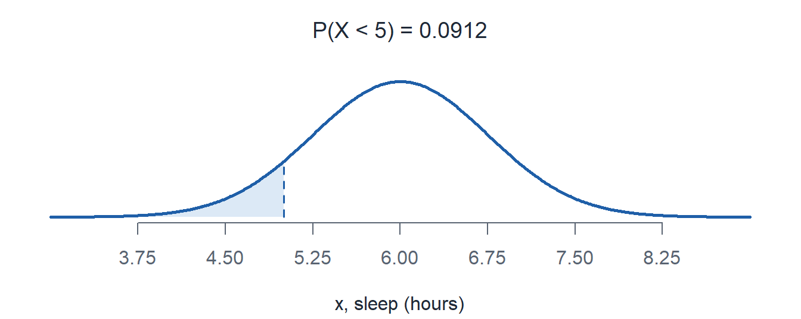
pnorm(5, 6, 0.75) = 0.0912
c) Find \(P(5.5 < X < 7)\).
TipAnswer
\[P(5.5 < X < 7) = F(7) - F(5.5) = \mathbf{0.6563}\]
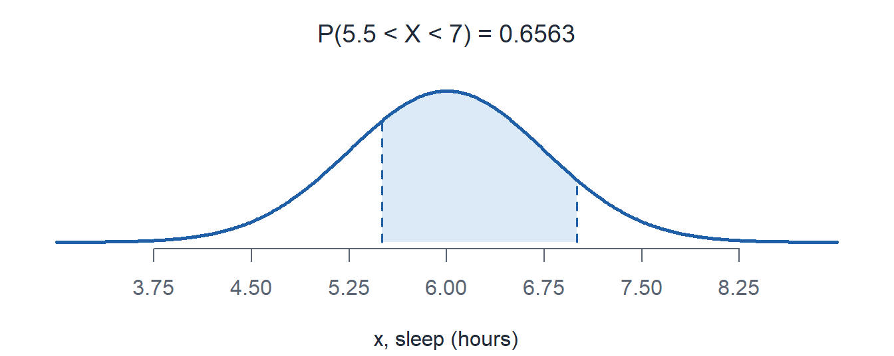
pnorm(7, 6, 0.75) - pnorm(5.5, 6, 0.75) = 0.6563
d) Find the 75th percentile.
TipAnswer
Find \(c\) so that \(F(c) = P(X \le c) = 0.75\): \(\mathbf{6.51}\) hours.
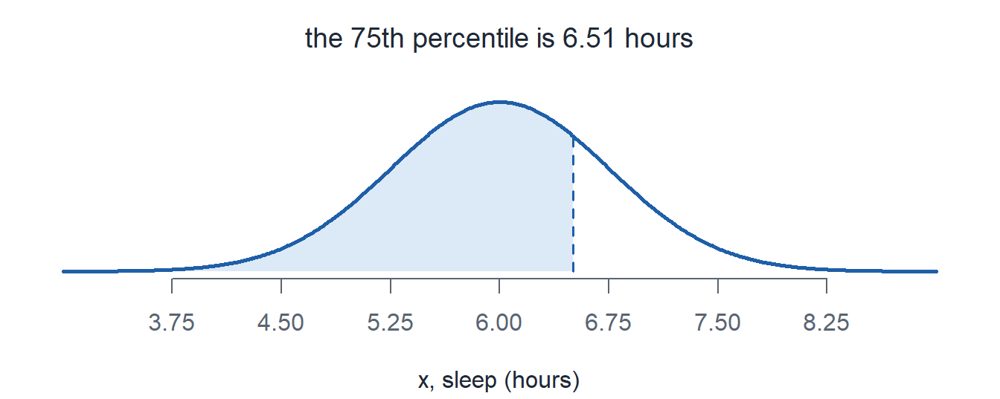
qnorm(0.75, 6, 0.75) = 6.5059
What We’re Doing: Lesson 13
Objectives
- Identify the exponential distribution and relate its parameter \(\lambda\) to the mean and standard deviation (both \(1/\lambda\)). (SLO 7)
- Compute exponential probabilities using the pdf and cdf. (SLO 7)
- Apply the memoryless property of the exponential distribution. (SLO 7)
Required Reading
Devore 4.4
Break!
Cal
Reese
DMath Frisbee!!
Math vs USMAPS
NotePreviously 1-0
2-0
15-0

The Takeaway for Today
NoteKey Concepts from Lesson 13
- The exponential models a wait: the time until the next event. \(X \sim \text{Exp}(\lambda)\)
- \(\lambda\) is a rate. The mean wait is its reciprocal: \(E(X) = \sigma = \dfrac{1}{\lambda}\), and \(V(X) = \dfrac{1}{\lambda^2}\)
- The cdf has a closed form: \(F(x) = P(X \le x) = 1 - e^{-\lambda x}\), so \(P(X > x) = e^{-\lambda x}\)
pexp(x, rate)is the cdf. The second slot is the rate, not the mean- Percentiles solve by hand: \(c = -\ln(1-p)/\lambda\). The median sits below the mean
- Memoryless: \(P(X \ge t + t_0 \mid X \ge t_0) = P(X \ge t)\). Time already waited does not matter
- Poisson counts events at rate \(\lambda\). The waits between them are \(\text{Exp}(\lambda)\)
Opening: Remember This?
- Cadets walk up to the Cadet Store counter at an average rate of \(2.5\) per hour. How many show up in the next \(2\) hours?
- Route 9W averages \(0.4\) potholes per km. How many are on a \(10\) km stretch?
- A cadet’s research paper averages \(0.2\) typos per page. How many are in a \(15\) page paper?
- Emails hit your inbox at \(6\) per hour. How many arrive during a \(55\) minute class?
What was \(\lambda\) for each?
TipAnswer
| scenario | \(\lambda\) | \(X\) | \(t\) | \(\mu = \lambda t\) |
|---|---|---|---|---|
| Cadet Store | \(2.5\)/hr | cadets in 2 hours | \(2\) hr | \(5\) cadets |
| Route 9W | \(0.4\)/km | potholes in 10 km | \(10\) km | \(4\) potholes |
| Research paper | \(0.2\)/page | typos in 15 pages | \(15\) pages | \(3\) typos |
| Inbox | \(6\)/hr | emails in 55 minutes | \(55/60\) hr | \(5.5\) emails |
Each count is Poisson: \(X \sim \text{Pois}(\mu = \lambda t)\).
What If We Cared About the Time Between Arrivals?
- How long until the next cadet walks up to the Cadet Store counter?
- How far until the next pothole on Route 9W?
- How many pages until the next typo?
- How long until the next email?
What is \(\lambda\) now? What is \(\mu\) now?
TipAnswer
| scenario | \(\lambda\) | \(X\) | \(\mu = 1/\lambda\) |
|---|---|---|---|
| Cadet Store | \(2.5\)/hr | hours to the next cadet | \(0.4\) hr (24 min) |
| Route 9W | \(0.4\)/km | km to the next pothole | \(2.5\) km |
| Research paper | \(0.2\)/page | pages to the next typo | \(5\) pages |
| Inbox | \(6\)/hr | hours to the next email | \(1/6\) hr (10 min) |
\(\lambda\) is the same rate. \(\mu\) is now the mean wait, \(1/\lambda\), and there is no window \(t\).
The Exponential Distribution
Our Example
Cadets arrive at the CIF counter at a rate of 3 per hour. How long until the next cadet?
ImportantThe Exponential pdf
\(X\) is exponential with parameter \(\lambda > 0\), written \(X \sim \text{Exp}(\lambda)\), if
\[f(x; \lambda) = \begin{cases} \lambda e^{-\lambda x} & x \ge 0 \\ 0 & \text{otherwise} \end{cases}\]
- \(X\) is a wait: a time (or distance) until the next event.
- \(\lambda\) is the rate of events, per unit of \(x\).
- The support starts at \(0\) and runs forever to the right. The curve is right skewed.
NoteFully specify the CIF wait
\[X \sim \text{Exp}(\lambda = 3)\]
- Designate the random variable. \(X\) is the hours until the next cadet arrives.
- Name the distribution. Exponential.
- Specify the parameter. \(\lambda = 3\) per hour.
\[f(x) = \begin{cases} 3 e^{-3x} & x \ge 0 \\ 0 & \text{otherwise} \end{cases}\]
WarningUnits
\(3\) per hour is \(1/20\) per minute. Whatever unit \(\lambda\) is in, \(x\) has to be in too.
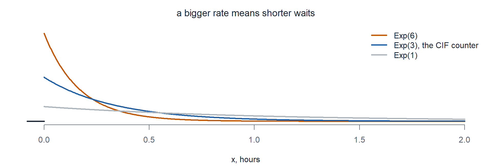
Mean, Variance, and Standard Deviation
ImportantMean and variance of an exponential
\[E(X) = \frac{1}{\lambda}, \qquad V(X) = \frac{1}{\lambda^2}, \qquad \sigma_X = \frac{1}{\lambda}\]
The mean and the standard deviation are the same number.
TipWhere those come from
Integrate by parts. The boundary terms are \(0\) at both ends.
\[\begin{aligned} E(X) &= \int_0^{\infty} x \, \lambda e^{-\lambda x} \, dx \\ &= \Big[-x e^{-\lambda x}\Big]_0^{\infty} + \int_0^{\infty} e^{-\lambda x} \, dx \\ &= 0 + \frac{1}{\lambda} \\[1em] E(X^2) &= \int_0^{\infty} x^2 \, \lambda e^{-\lambda x} \, dx \\ &= \Big[-x^2 e^{-\lambda x}\Big]_0^{\infty} + \frac{2}{\lambda} \int_0^{\infty} x \, \lambda e^{-\lambda x} \, dx \\ &= 0 + \frac{2}{\lambda} \cdot \frac{1}{\lambda} = \frac{2}{\lambda^2} \\[1em] V(X) &= E(X^2) - [E(X)]^2 = \frac{2}{\lambda^2} - \frac{1}{\lambda^2} = \frac{1}{\lambda^2} \end{aligned}\]
CIF counter: what is the mean time between arrivals? The standard deviation?
TipAnswer
\[E(X) = \frac{1}{\lambda} = \frac{1}{3} \text{ hour} = 20 \text{ minutes}, \qquad V(X) = \frac{1}{3^2} = \frac{1}{9}, \qquad \sigma = \frac{1}{3} \text{ hour}\]
The Cumulative Distribution Function
Unlike the normal, this integral has a closed form.
\[F(x) = P(X \le x) = \int_0^x \lambda e^{-\lambda y} \, dy = \Big[-e^{-\lambda y}\Big]_0^x = 1 - e^{-\lambda x}\]
ImportantThe Exponential cdf
\[F(x; \lambda) = P(X \le x) = \begin{cases} 0 & x < 0 \\ 1 - e^{-\lambda x} & x \ge 0 \end{cases}\]
The right tail is the part to remember: \(P(X > x) = 1 - F(x) = e^{-\lambda x}\).
CIF counter:
\[F(x) = P(X \le x) = \begin{cases} 0 & x < 0 \\ 1 - e^{-3x} & x \ge 0 \end{cases}\]
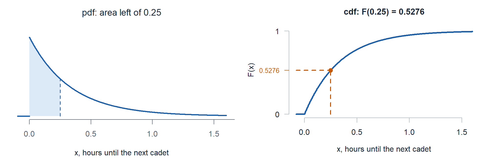
Computing Exponential Probabilities
Importantpexp is the cdf
\[\texttt{pexp(x, rate)} \;=\; F(x) \;=\; P(X \le x) \;=\; 1 - e^{-\lambda x}\]
WarningWhere cadets go wrong
- Mean in the rate slot. A mean wait of \(1/3\) hour is a rate of \(3\):
pexp(x, 3), neverpexp(x, 1/3). - Mixed units. The rate and \(x\) must use the same time unit.
- Leaving the rate off.
pexp(0.25)quietly assumesrate = 1.
CIF counter: \(X \sim \text{Exp}(\lambda = 3)\).
a) \(P(X < 0.25)\)
TipAnswer
\[P(X < 0.25) = \int_0^{0.25} 3 e^{-3x} \, dx = F(0.25) = 1 - e^{-3(0.25)} = \mathbf{0.5276}\]
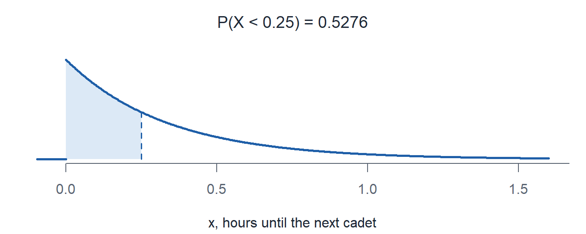
pexp(0.25, 3) = 0.5276
b) \(P(X \le 0.25)\)
TipAnswer
\[P(X \le 0.25) = \int_0^{0.25} 3 e^{-3x} \, dx = F(0.25) = 1 - e^{-3(0.25)} = \mathbf{0.5276}\]
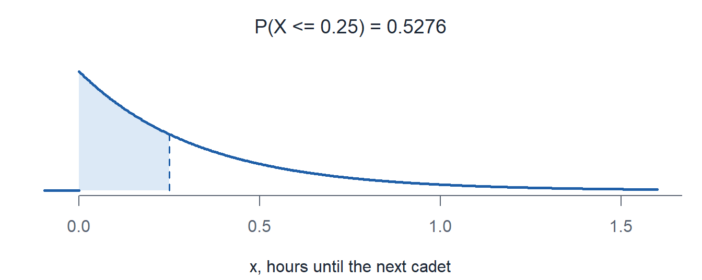
pexp(0.25, 3) = 0.5276
c) \(P(X > 0.5)\)
TipAnswer
\[P(X > 0.5) = \int_{0.5}^{\infty} 3 e^{-3x} \, dx = 1 - F(0.5) = e^{-3(0.5)} = \mathbf{0.2231}\]
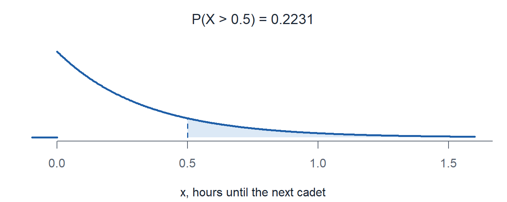
1 - pexp(0.5, 3) = 0.2231
d) \(P(X \ge 0.5)\)
TipAnswer
\[P(X \ge 0.5) = \int_{0.5}^{\infty} 3 e^{-3x} \, dx = 1 - F(0.5) = e^{-3(0.5)} = \mathbf{0.2231}\]
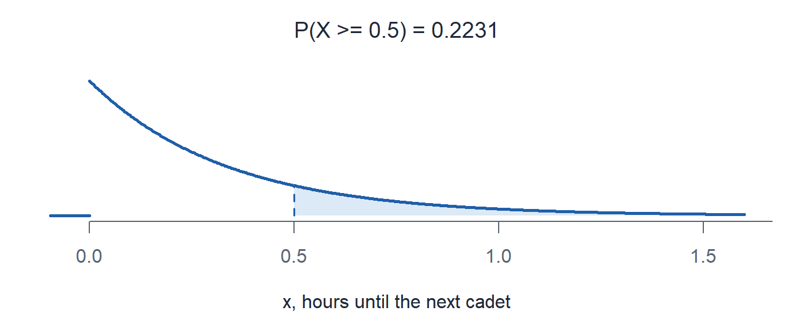
1 - pexp(0.5, 3) = 0.2231
e) \(P(0.25 < X < 0.5)\)
TipAnswer
\[P(0.25 < X < 0.5) = \int_{0.25}^{0.5} 3 e^{-3x} \, dx = F(0.5) - F(0.25) = e^{-0.75} - e^{-1.5} = \mathbf{0.2492}\]
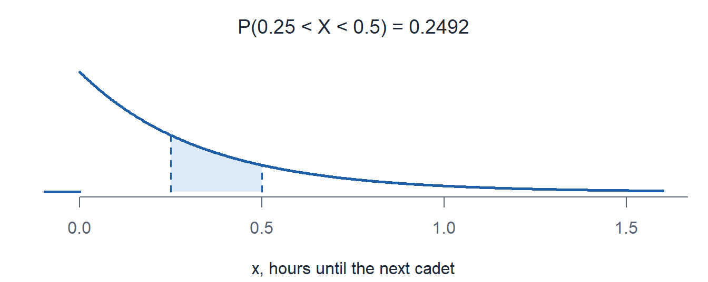
pexp(0.5, 3) - pexp(0.25, 3) = 0.2492
f) \(P(X < 1/3)\), a wait shorter than the mean
TipAnswer
\[P(X < 1/3) = \int_0^{1/3} 3 e^{-3x} \, dx = F(1/3) = 1 - e^{-1} = \mathbf{0.6321}\]
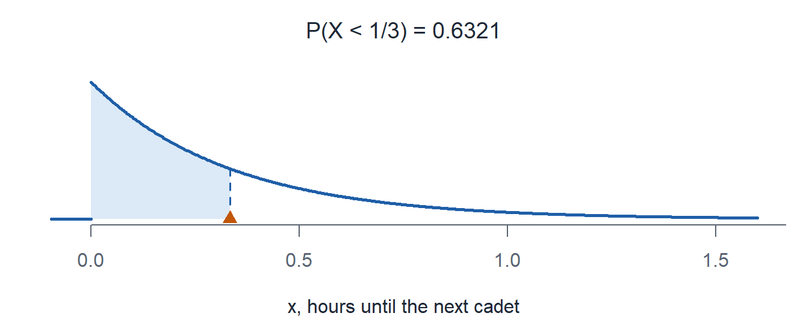
pexp(1/3, 3) = 0.6321
Not \(0.5\). The long right tail drags the mean to the right, so most waits are shorter than the mean. This is true for every exponential: \(1 - e^{-\lambda(1/\lambda)} = 1 - e^{-1}\).
g) \(P(X = 0.5)\)
TipAnswer
\[P(X = 0.5) = \int_{0.5}^{0.5} 3 e^{-3x} \, dx = F(0.5) - F(0.5) = 0\]
pexp(0.5, 3) - pexp(0.5, 3) = 0.0000
Warningdexp is not a probability
dexp(0.5, 3) = 0.6694
That is the height of the pdf at \(0.5\), not \(P(X = 0.5)\).
h) What is the probability exactly 4 cadets arrive in the next hour?
TipAnswer
A count in a window. \(t = 1\) hour, so \(\mu = 3(1) = 3\).
\[Y \sim \text{Pois}(\mu = 3)\]
- Designate the random variable. \(Y\) is the number of cadets who arrive in the next hour.
- Name the distribution. Poisson.
- Specify the parameter. \(\mu = \lambda t = 3(1) = 3\) cadets.
\[P(Y = 4) = \frac{e^{-3} 3^4}{4!} = \mathbf{0.1680}\]
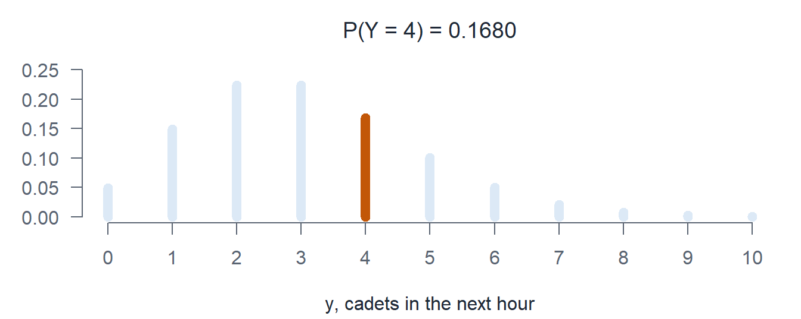
dpois(4, 3) = 0.1680
Going Backwards: Percentiles
Set the cdf equal to \(p\) and solve. No table, no R required.
\[\begin{aligned} F(c) = P(X \le c) &= p \\ 1 - e^{-\lambda c} &= p \\ e^{-\lambda c} &= 1 - p \\ c &= \frac{-\ln(1 - p)}{\lambda} \end{aligned}\]
Importantqexp is the inverse cdf
\[\texttt{qexp(p, rate)} \;=\; c = \frac{-\ln(1-p)}{\lambda}\]
Median wait at the CIF counter. \(p = 0.5\):
\[\tilde{\mu} = \frac{-\ln(0.5)}{3} = \frac{\ln 2}{3} = \mathbf{0.2310} \text{ hour} \approx 13.86 \text{ minutes}\]
qexp(0.5, 3) = 0.2310
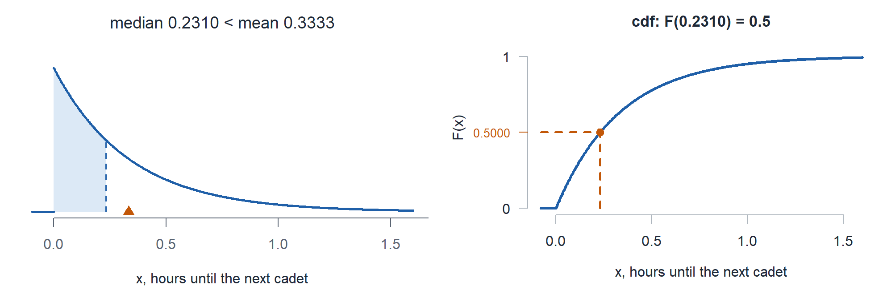
90th percentile.
\[c = \frac{-\ln(0.1)}{3} = \mathbf{0.7675} \text{ hour} \approx 46.05 \text{ minutes}\]
qexp(0.90, 3) = 0.7675
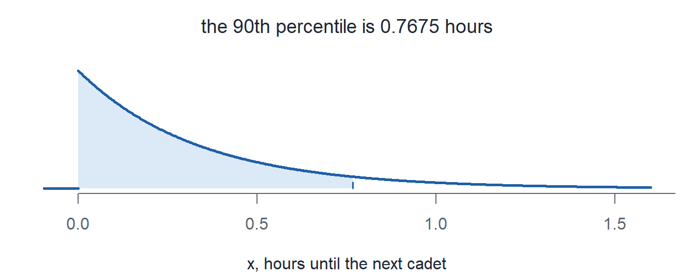
NoteSide fact: the exponential is memoryless
\[P(X \ge t + t_0 \mid X \ge t_0) = P(X \ge t)\]
Time already waited does not matter. Nobody has come to the CIF counter in 0.25 hours, and the chance of waiting at least another 0.5 hours is still \(P(X \ge 0.5) = e^{-3(0.5)} = 0.2231\).
(1 - pexp(0.75, 3)) / (1 - pexp(0.25, 3)) = 0.2231
1 - pexp(0.5, 3) = 0.2231
Poisson vs Exponential
Trucks arrive at the motor pool fuel point at a rate of 2 per hour. That one rate gives two random variables.
ImportantCount or wait?
- Count. \(Y\) is the number of trucks in an hour. \(Y \sim \text{Pois}(\mu = 2)\).
- Wait. \(X\) is the hours until the next truck. \(X \sim \text{Exp}(\lambda = 2)\).
- Same \(2\) per hour in both.
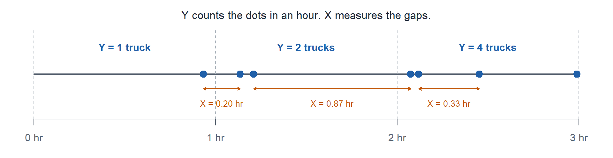
For each question: count or wait? Fully specify, then compute.
a) What is the probability exactly 3 trucks arrive in the next hour?
TipAnswer
A count.
\[Y \sim \text{Pois}(\mu = 2)\]
- Designate the random variable. \(Y\) is the number of trucks that arrive in the next hour.
- Name the distribution. Poisson.
- Specify the parameter. \(\mu = 2\) trucks.
\[P(Y = 3) = \frac{e^{-2} 2^3}{3!} = \mathbf{0.1804}\]
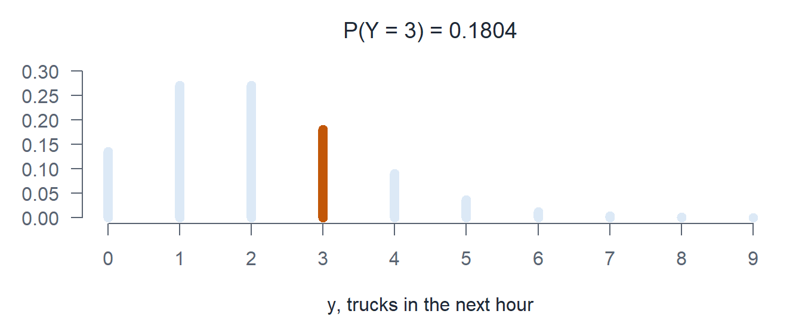
dpois(3, 2) = 0.1804
b) What is the probability the next truck arrives within half an hour?
TipAnswer
A wait. Half an hour is \(x = 0.5\).
\[X \sim \text{Exp}(\lambda = 2)\]
- Designate the random variable. \(X\) is the hours until the next truck arrives.
- Name the distribution. Exponential.
- Specify the parameter. \(\lambda = 2\) per hour.
\[P(X < 0.5) = 1 - e^{-2(0.5)} = 1 - e^{-1} = \mathbf{0.6321}\]
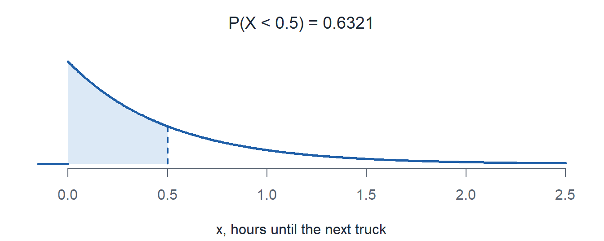
pexp(0.5, 2) = 0.6321
c) What is the mean time between trucks? What is the expected number of trucks in the next hour?
TipAnswer
Wait: \(X \sim \text{Exp}(\lambda = 2)\), so \(E(X) = 1/\lambda = \mathbf{1/2}\) hour.
Count: \(Y \sim \text{Pois}(\mu = 2)\), so \(E(Y) = \mathbf{2}\) trucks.
One is the reciprocal of the rate. The other is the rate.
d) What is the probability no trucks arrive in the next hour? Do it both ways.
TipAnswer
“No trucks in the next hour” and “the wait is longer than 1 hour” are the same event.
\[\begin{aligned} \text{Count:} \quad & Y \sim \text{Pois}(\mu = 2), && P(Y = 0) = e^{-2} = \mathbf{0.1353} \\ \text{Wait:} \quad & X \sim \text{Exp}(\lambda = 2), && P(X > 1) = e^{-2(1)} = \mathbf{0.1353} \end{aligned}\]
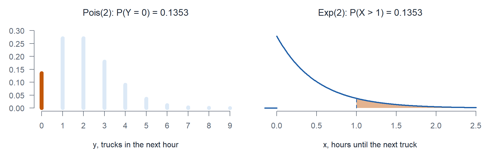
dpois(0, 2) = 0.1353
1 - pexp(1, 2) = 0.1353
e) What is the probability at least 3 trucks arrive in the next hour?
TipAnswer
A count.
\[Y \sim \text{Pois}(\mu = 2)\]
\[P(Y \ge 3) = 1 - P(Y \le 2) = \mathbf{0.3233}\]
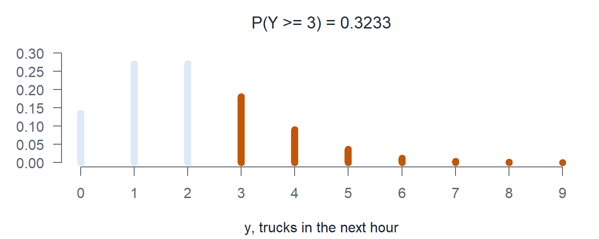
1 - ppois(2, 2) = 0.3233
f) How long until the fuel point is 90% sure a truck has arrived?
TipAnswer
A wait, run backwards. The 90th percentile of \(X \sim \text{Exp}(\lambda = 2)\).
\[c = \frac{-\ln(0.1)}{2} = \mathbf{1.1513} \text{ hours}\]
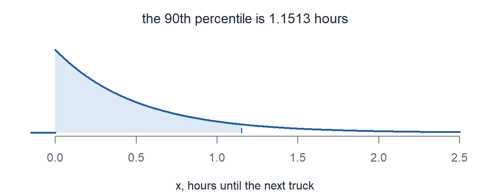
qexp(0.90, 2) = 1.1513
| Poisson (L10) | Exponential (L13) | |
|---|---|---|
| Random variable | Count of trucks in an hour | Wait until the next truck |
| Type | Discrete, \(0, 1, 2, \dots\) | Continuous, \(x \ge 0\) |
| \(\lambda\) | Rate, 2 per hour | Rate, 2 per hour |
| Mean | \(2\) trucks | \(1/2\) hour |
| Second argument in R | The mean, \(2\) | The rate, \(2\) |
| R-Lite | ppois(y, 2) |
pexp(x, 2) |
Distributions So Far
Four named distributions. Fully specifying one is the same three steps every time: designate the random variable in words with units, name the distribution, specify the parameters as numbers.
| Binomial | Poisson | Normal | Exponential | |
|---|---|---|---|---|
| Type | Discrete | Discrete | Continuous | Continuous |
| Use it when | \(x\) successes in \(n\) fixed trials | \(x\) events in a window | Symmetric, bell shaped measurement | Wait until the next event |
| Fully specified | \(X \sim \text{Binom}(n,\ p)\) | \(X \sim \text{Pois}(\mu)\) | \(X \sim N(\mu,\ \sigma^2)\) | \(X \sim \text{Exp}(\lambda)\) |
| Parameters | \(n\) trials, \(p\) success probability | \(\mu = \lambda t\), expected count | \(\mu\) center, \(\sigma\) spread | \(\lambda\) rate |
| Possible values | \(x = 0, 1, \dots, n\) | \(x = 0, 1, 2, \dots\) | \(-\infty < x < \infty\) | \(x \ge 0\) |
| pmf or pdf | \(\dbinom{n}{x} p^x (1-p)^{n-x}\) | \(\dfrac{e^{-\mu}\mu^x}{x!}\) | \(\dfrac{1}{\sqrt{2\pi}\,\sigma} e^{-(x-\mu)^2/(2\sigma^2)}\) | \(\lambda e^{-\lambda x}\) |
| \(E(X)\) | \(np\) | \(\mu\) | \(\mu\) | \(1/\lambda\) |
| \(V(X)\) | \(np(1-p)\) | \(\mu\) | \(\sigma^2\) | \(1/\lambda^2\) |
d, the pmf or pdf |
dbinom(x, n, p) |
dpois(x, mu) |
dnorm(x, mean, sd) |
dexp(x, rate) |
p, the cdf \(P(X \le x)\) |
pbinom(x, n, p) |
ppois(x, mu) |
pnorm(x, mean, sd) |
pexp(x, rate) |
q, the cdf backwards |
qbinom(area, n, p) |
qpois(area, mu) |
qnorm(area, mean, sd) |
qexp(area, rate) |
| Our example | \(X \sim \text{Binom}(n = 5,\ p = 0.75)\) | \(X \sim \text{Pois}(\mu = 5)\) | \(X \sim N(\mu = 16,\ \sigma^2 = 2^2)\) | \(X \sim \text{Exp}(\lambda = 3)\) |
| \(P(X = 3)\) | dbinom(3, 5, 0.75) |
dpois(3, 5) |
\(0\), use an interval | \(0\), use an interval |
| \(P(X \le 3)\) | pbinom(3, 5, 0.75) |
ppois(3, 5) |
pnorm(3, 16, 2) |
pexp(3, 3) |
| \(90\)th percentile | qbinom(0.90, 5, 0.75) |
qpois(0.90, 5) |
qnorm(0.90, 16, 2) |
qexp(0.90, 3) |
WarningWhere people lose points
dnormanddexpare heights, not probabilities. For a continuous variable \(P(X = x) = 0\).dbinomanddpoisare probabilities. \(P(X = x)\) is real for a discrete variable.- The normal takes \(\sigma\), not \(\sigma^2\). The Poisson takes \(\mu = \lambda t\). The exponential takes \(\lambda\), not the mean.
ptakes an \(x\) and returns an area.qtakes an area and returns an \(x\).
Board Problems
Problem 1: Range Control Calls
Calls to range control come in with a mean of 12 minutes between calls. The time until the next call is exponential.
NoteQuestions
Fully specify the distribution. Give the mean and standard deviation.
What is the probability the next call comes within 5 minutes?
What is the probability range control goes 30 minutes without a call?
Find the median wait.
TipAnswers
- \(X\) is the minutes until the next call, \(X \sim \text{Exp}(\lambda = 1/12)\). \(E(X) = \sigma = 12\) minutes.
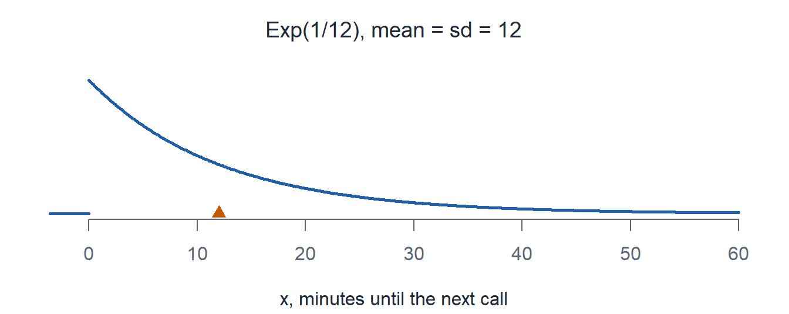
- \[P(X < 5) = 1 - e^{-5/12} = \mathbf{0.3408}\]
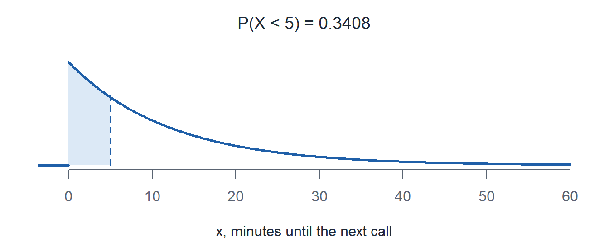
pexp(5, 1/12) = 0.3408
- \[P(X > 30) = e^{-30/12} = \mathbf{0.0821}\]
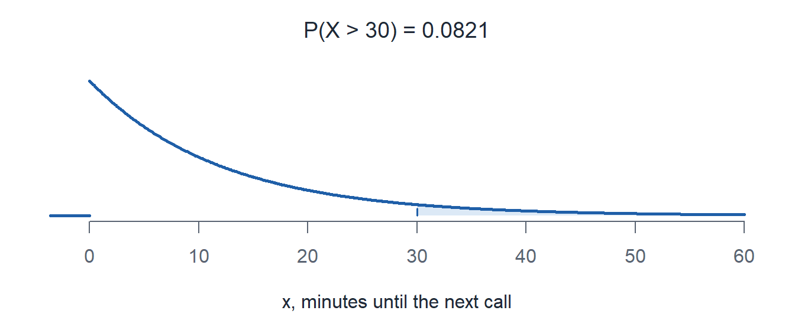
1 - pexp(30, 1/12) = 0.0821
- \[\tilde{\mu} = \frac{-\ln(0.5)}{1/12} = 12 \ln 2 = \mathbf{8.32} \text{ minutes}\]
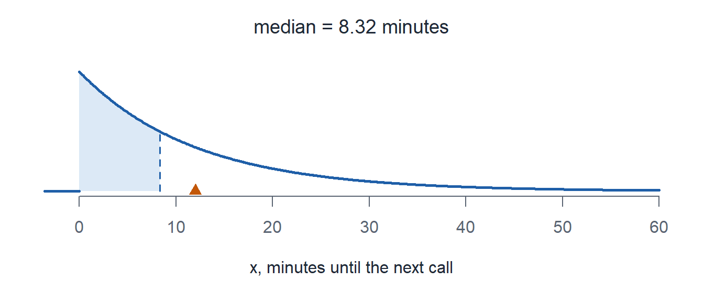
qexp(0.5, 1/12) = 8.3178
Problem 2: Night Vision Tubes
The image intensifier tube in a set of night vision goggles fails at a rate of \(\lambda = 0.0004\) per hour of use.
NoteQuestions
Fully specify the distribution. Give the mean and standard deviation.
What is the probability a new tube lasts more than 3000 hours?
A tube already has 1000 hours on it. What is the probability it lasts at least another 3000?
The unit wants a replacement schedule so that only 5% of tubes fail first. How many hours is that?
TipAnswers
\(X\) is the hours until the tube fails, \(X \sim \text{Exp}(\lambda = 0.0004)\). \(E(X) = \sigma = 1/0.0004 = 2500\) hours.
\[P(X > 3000) = e^{-0.0004(3000)} = e^{-1.2} = \mathbf{0.3012}\]
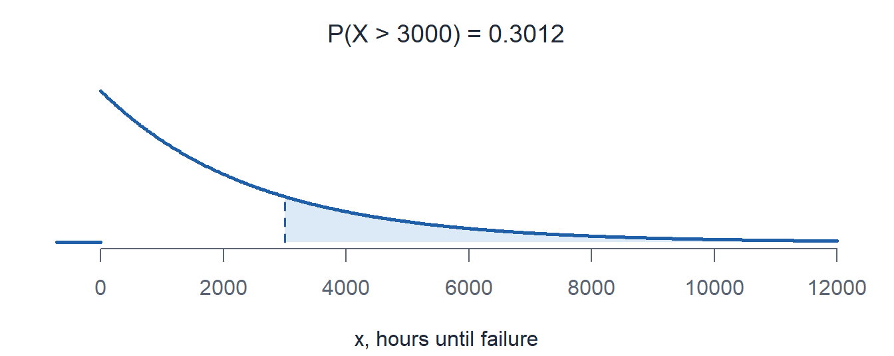
1 - pexp(3000, 0.0004) = 0.3012
- Memoryless. The 1000 hours do not matter.
\[P(X \ge 4000 \mid X \ge 1000) = \frac{e^{-0.0004(4000)}}{e^{-0.0004(1000)}} = e^{-1.2} = \mathbf{0.3012}\]
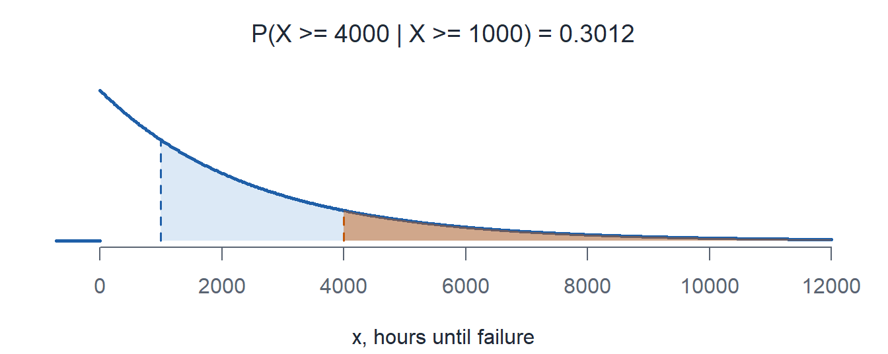
(1 - pexp(4000, 0.0004)) / (1 - pexp(1000, 0.0004)) = 0.3012
- The 5th percentile.
\[c = \frac{-\ln(0.95)}{0.0004} = \mathbf{128.23} \text{ hours}\]
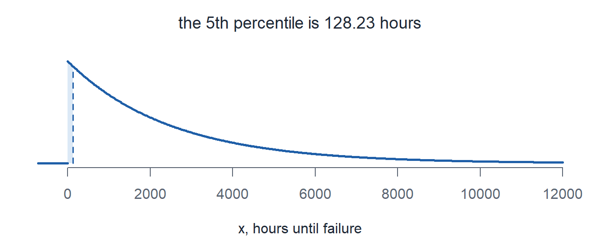
qexp(0.05, 0.0004) = 128.2330
That schedule would pull tubes almost new. Because of (c), replacing a working tube early buys nothing: an old tube is as good as a new one.
Problem 3: MEDEVAC Requests
MEDEVAC requests reach a battalion aid station at a rate of 2 per hour.
NoteQuestions
What is the probability of no requests in the next 45 minutes? Do it both ways.
What is the mean wait between requests, in minutes?
What is the probability of exactly 3 requests in the next 2 hours?
What is the probability the next request comes within 10 minutes?
TipAnswers
- \(t = 0.75\) hours.
\[\begin{aligned} \text{Poisson:} \quad & X \sim \text{Pois}(\mu = 2(0.75) = 1.5), && P(X = 0) = e^{-1.5} = \mathbf{0.2231} \\ \text{Exponential:} \quad & T \sim \text{Exp}(\lambda = 2), && P(T > 0.75) = e^{-2(0.75)} = \mathbf{0.2231} \end{aligned}\]
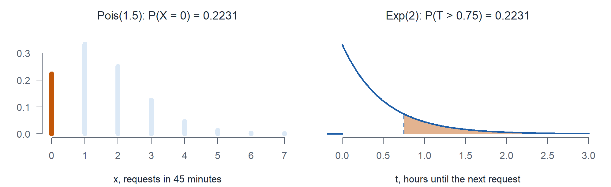
dpois(0, 1.5) = 0.2231
1 - pexp(0.75, 2) = 0.2231
\(1/\lambda = 1/2\) hour \(= \mathbf{30}\) minutes.
A count in a window, so Poisson with \(\mu = 2(2) = 4\).
\[P(X = 3) = \frac{e^{-4} 4^3}{3!} = \mathbf{0.1954}\]
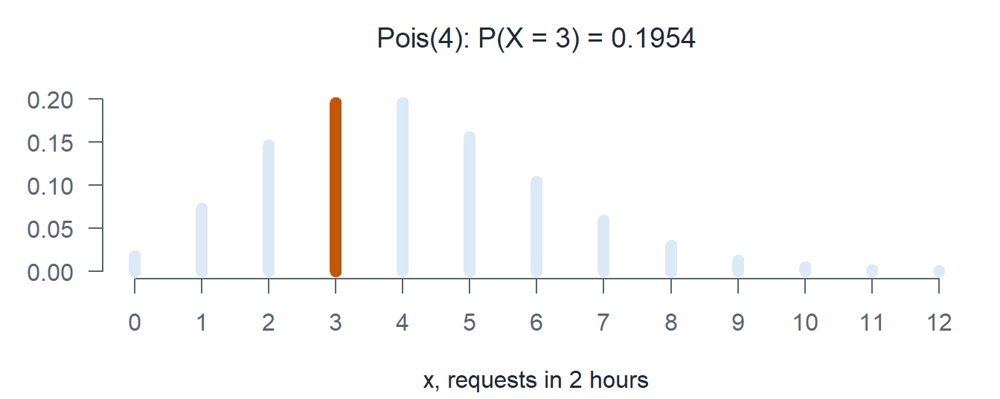
dpois(3, 4) = 0.1954
- A wait, so exponential. 10 minutes is \(1/6\) hour.
\[P(T < 1/6) = 1 - e^{-2/6} = \mathbf{0.2835}\]
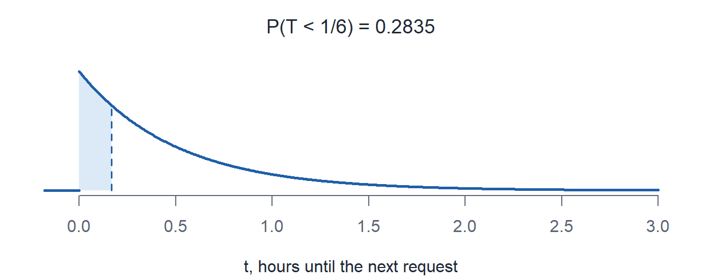
pexp(1/6, 2) = 0.2835
Problem 4: Which Distribution?
Fully specify each random variable, then write the R-Lite for the probability asked.
NoteQuestions
Each of the 12 cadets in a squad passes the ACFT with probability 0.9, independently. The number who pass. Find \(P(\text{all } 12 \text{ pass})\).
The staff duty desk gets calls at 1.5 per hour. The number of calls in an 8 hour shift. Find \(P(\text{at most } 10 \text{ calls})\).
Same desk. The minutes until the next call. Find \(P(\text{a call within } 10 \text{ minutes})\).
Packed rucksack weights have a mean of 45 lb and a standard deviation of 3 lb, bell shaped. The weight of one ruck. Find \(P(\text{under } 50 \text{ lb})\).
A generator runs a mean of 400 hours between failures. The hours until the next failure. Find \(P(\text{it runs past its mean})\).
TipAnswers
\(X \sim \text{Binom}(n = 12,\ p = 0.9)\), the number of the 12 who pass.
dbinom(12, 12, 0.9) = 0.2824\(X \sim \text{Pois}(\mu = 1.5(8) = 12)\), the number of calls in the shift.
ppois(10, 12) = 0.3472\(X \sim \text{Exp}(\lambda = 1/40)\), minutes until the next call. \(1.5\) per hour is \(1/40\) per minute.
pexp(10, 1/40) = 0.2212\(X \sim N(\mu = 45,\ \sigma^2 = 3^2)\), the weight in pounds.
pnorm(50, 45, 3) = 0.9522\(X \sim \text{Exp}(\lambda = 1/400)\), hours until failure.
1 - pexp(400, 1/400) = 0.3679
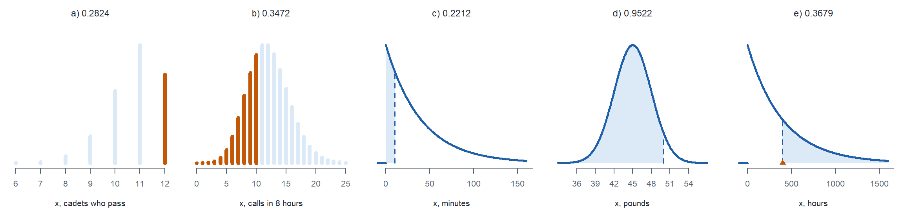
Problem 5: Stretch, Solve for the Rate
Nobody tells you \(\lambda\). The S4 reports that 20% of radio batteries die within their first 6 hours. Assume battery life is exponential.
NoteQuestions
Solve for \(\lambda\). What is the mean battery life?
Find the probability a battery lasts more than a full 24 hour day.
A battery has run 12 hours. What is the probability it dies in the next 6?
TipAnswers
- Set the cdf at 6 equal to 0.2.
\[\begin{aligned} F(6) = P(X \le 6) &= 0.2 \\ 1 - e^{-6\lambda} &= 0.2 \\ e^{-6\lambda} &= 0.8 \\ \lambda &= \frac{-\ln(0.8)}{6} = \mathbf{0.0372} \text{ per hour} \end{aligned}\]
\[E(X) = \frac{1}{\lambda} = \mathbf{26.89} \text{ hours}\]
- \[P(X > 24) = e^{-24\lambda} = \left(e^{-6\lambda}\right)^4 = 0.8^4 = \mathbf{0.4096}\]
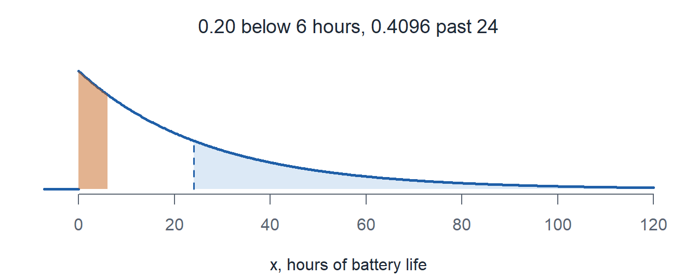
1 - pexp(24, -log(0.8)/6) = 0.4096
- Memoryless. The first 12 hours do not matter, so this is the same as a new battery dying in its first 6: \(\mathbf{0.2}\).
\[P(X \le 18 \mid X \ge 12) = \frac{F(18) - F(12)}{1 - F(12)} = \frac{0.1280}{0.64} = \mathbf{0.2}\]
(pexp(18, -log(0.8)/6) - pexp(12, -log(0.8)/6)) / (1 - pexp(12, -log(0.8)/6)) = 0.2000
Before You Leave
Today
- \(X \sim \text{Exp}(\lambda)\) models a wait, and \(E(X) = \sigma = 1/\lambda\)
- \(P(X > x) = e^{-\lambda x}\), and
pexptakes the rate, not the mean - The median \(\ln 2 / \lambda\) sits below the mean
- Memoryless: time already waited does not change what comes next
- Poisson counts the events, exponential measures the waits between them
Any questions?
Next Lesson
Lesson 14: Exploratory Data Analysis (EDA)
- Summarize project data with appropriate graphical and numerical descriptive methods (histograms, boxplots, scatterplots)
- Compute and interpret the sample correlation coefficient \(r\)
- Distinguish correlation from causation
- Communicate exploratory findings and pose questions for further analysis
Reading: Supplement S3 (Canvas)
Upcoming Graded Events
- WebAssign 4.4: due at the start of Lesson 14
- WPR I: Lesson 16 (covers Lessons 1-13)
- TEE: 15-18 Dec 2026